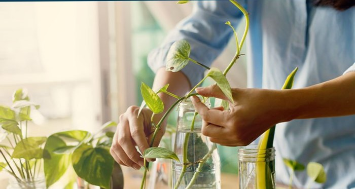
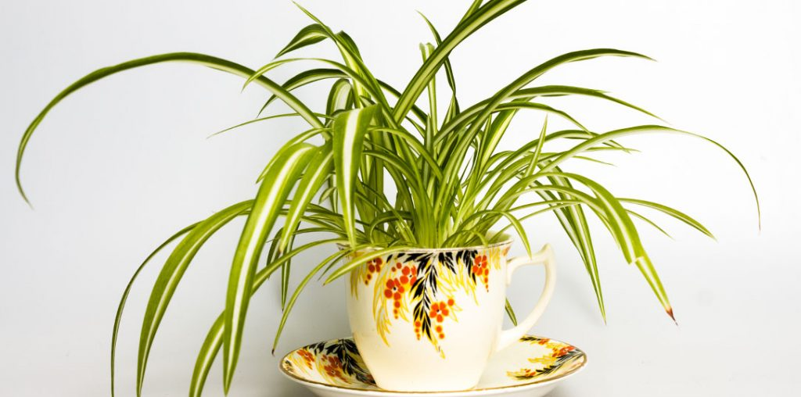
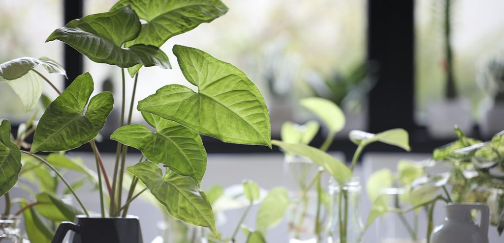

Uzgajajte vodeni vrt u zatvorenom
Vodene bašte i ribnjaci nisu samo za ljude sa otvorenim prostorima. Možete kreirati zatvorene vodene bašte u manjem obimu sa svim istim karakteristikama kao otvoreni ribnjaci. Ove jedinstvene karakteristike vam omogućavaju da uživate u spokojnim prizorima i zvucima vodenih objekata tokom cele godine!
U zatvorenom vodenom vrtu možete koristiti i polu-vodene i vodene sobne biljke. Polu-vodene sobne biljke mogu da se prilagode da imaju svoje korenje u zemljištu ili vodi dok drže lišće iznad vode. Vodene biljke žive potpuno potopljene u vodu puno vreme, imaju većinu svog lišća u vodi i potreban im je sloj šljunka, kamenja ili peska koji će im pomoći da usidre svoje korenje. Postoji iznenađujući broj uobičajenih sobnih biljaka koje se mogu prilagoditi poluvodenom životu.
Kućne biljke za vaš vodeni vrt
Polu-vodene kućne biljke koje su prilagodljive rastu u vodi uključuju:
- Pothos
- Filodendroni
- Hoja
- Tradeskancija
- Paukov cvet
- Strela cvet
- Kala ljiljani
- Engleski bršljan
- Ljiljani mira
Postoji nekoliko vodenih biljaka koje su pogodne za zatvorene prostore koje takođe možete uzgajati. Marimo loptice od mahovine su samo jedna popularna opcija. Druge sjajne vodene biljke pogodne za zatvorene prostore uključuju:
- Java paprat
- Java mahovina
- Amazonski mač
- Vodena kuga
- Anubijas
Plutajuće biljke su takođe zabavan dodatak za pokrivanje dela površine vode ako imate široku posudu. Ovo uključuje opcije kao što su:
- Vodene leće
- Vodena salata
- Vodeni zumbul
Ali nemojte samo da bežite do najbližeg ribnjaka i pokupite malo Vodene leće. To je dobar način da dobijete mnogo drugih neželjenih stvari u vašoj zatvorenoj vodenoj bašti. Obavezno kupite svoje vodene biljke od renomiranih izvora. Prodavnice kućnih ljubimaca, posebno one za akvarijume i ribe, često nude veliki izbor vodenih biljaka.
Sve što vam je potrebno za uzgoj biljaka u vodi u zatvorenom prostoru
Najvažnija stvar koja će vam trebati da pokrenete svoju zatvorenu vodenu baštu je vodonepropusna posuda. U zavisnosti od vašeg prostora, možete koristiti višu staklenu posudu i koristiti i vodene i poluvodene biljke za prekrasan podvodni pogled kao i iznad vode.
Ako imate dovoljno prostora, možete ići sa širokom posudom za zatvoreni vodeni vrt, što bi vam omogućilo da uzgajate lepše plutajuće biljke na vrhu vode.
Pre nego što počnete da sastavljate svoju vodenu baštu, napunite svoje posude vodom i ostavite da odstoji 24 sata. Ovo će dovesti temperaturu do sobne temperature i dati hloru koji se koristi u tretmanu vode da ispari. Možete pokriti kontejnere, ali ih nemojte zatvarati. Obavezno ostavite prazninu za razmenu vazduha.
Zatim će vam trebati supstrat. Vodenim i poluvodenim biljkama su potrebni veoma različiti medijumi za uzgoj od većine sobnih biljaka. Zemlja za saksije, pa čak i mnoge mešavine bez zemlje, napraviće veliki praškasti nered u vodenoj bašti.
Možete kupiti određene podloge za vodene bašte. Obično su to sitni šljunak ili šljunak koji su prethodno oprani. Ako koristite akvarijumski šljunak, brzo ga isperite da biste uklonili prašinu koja se možda nakupila. Možete odmah dodati supstrat u svoju vodenu baštu, ili ga možete sačuvati i dodati dok dodajete biljke.
Najvažnije, trebaće vam biljke. Ako želite da neke od vaših sobnih biljaka pretvorite u polu-vodeni život, možda ćete želeti da počnete sa reznicama. U suprotnom, moraćete da provedete neko vreme da isperete svu zemlju iz korena vaših biljaka kako ne bi ušla u vašu vodenu baštu. Pokretanje biljaka od reznica u vodi i njihovo držanje u vodi je manje šokantan prelaz za biljke nego stavljanje biljaka u saksiji u ravnu vodu.
Za poluvodene biljke, trebaće vam nešto da napravite policu u vašoj vodenoj bašti na kojoj će vaše biljke sedeti i korpa za sadnju vode. Ovo će pomoći da se korenje i šljunak zadrži i usidre. Možete koristiti razne stvari da napravite police na kojima će vaše biljke sedeti, od cigle preko kamenja do starih kontejnera. Samo se uverite da su dobro oprane i da se sav sapun temeljno ispere pre nego što ih dodate u svoju vodenu baštu.
Pravljenje vodenog vrta sa poluvodenim kućnim biljkama
Sakupite sve svoje biljke, supstrat i vodu zajedno da biste mogli da počnete da uređujete i sadite svoju vodenu baštu. Ako koristite staklenu posudu, obično je najlakše dodati sloj supstrata na dno, a zatim ga delimično napuniti vodom. Zatim počnite da postavljate svoje biljke.
Kada imate stvari tamo gde ih želite, možete napuniti ostatak vode. Samo budite sigurni da to radite veoma polako i nežno, jer struje koje se stvaraju kada sipate vodu mogu da izbace ili zapetljaju vaše biljke.